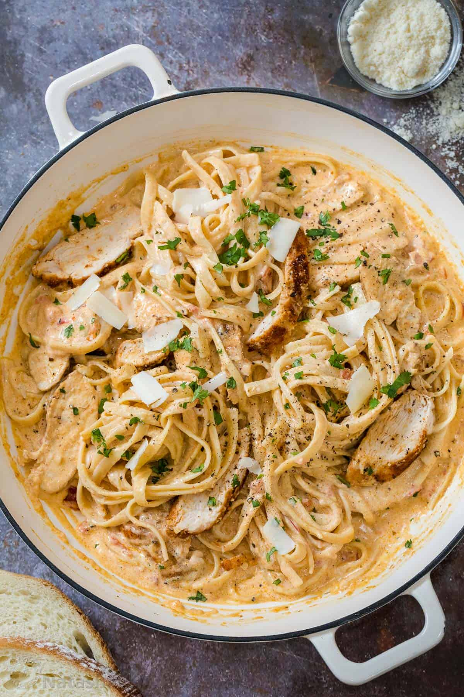

Creamy Cajun Chicken Pasta

Description
This is a delicious and creamy chicken pasta recipe. This recipe has a healthy mix of macronutrients.
It is high in protein because of the chicken, has a good balance of carbohydrates with the pasta, and a healthy serving of
fat with the creamy sauce. This recipe will leave you feeling filled and healthy at the same time!
Ingredients
- 4 ounces linguine pasta
- 2 boneless, skinless chicken breast halves, sliced
- 2 teaspoons cajun seasoning
- 2 tablespoons butter
- 1 green bell pepper, chopped
- 1/2 red bell pepper, chopped
- 4 fresh mushrooms, sliced
- 1 green onion, minced
- 1 1/2 cups heavy cream
- 1/4 teaspoon dried basil
- 1/4 teaspooon lemon pepper
- 1/4 teaspoon salt
- 1/8 teaspoon garlic powder
- 1/8 teaspoon ground black pepper
- 2 tablespoons grated parmesan cheese
Steps
- Bring a large pot of lightly salted water to a boil. Add linguini pasta, and cook for 8 to 10 minutes, or until al dente; drain.
- Meanwhile, place chicken and Cajun seasoning in a bowl, and toss to coat.
- In a large skillet over medium heat, saute chicken in butter until no longer pink and juices run clear, about 5 to 7 minutes. Add green and red bell peppers, sliced mushrooms and green onions; cook for 2 to 3 minutes. Reduce heat, and stir in heavy cream. Season the sauce with basil, lemon pepper, salt, garlic powder and ground black pepper, and heat through.
- In a large bowl, toss linguini with sauce. Sprinkle with grated Parmesan cheese.
Return to Homepage